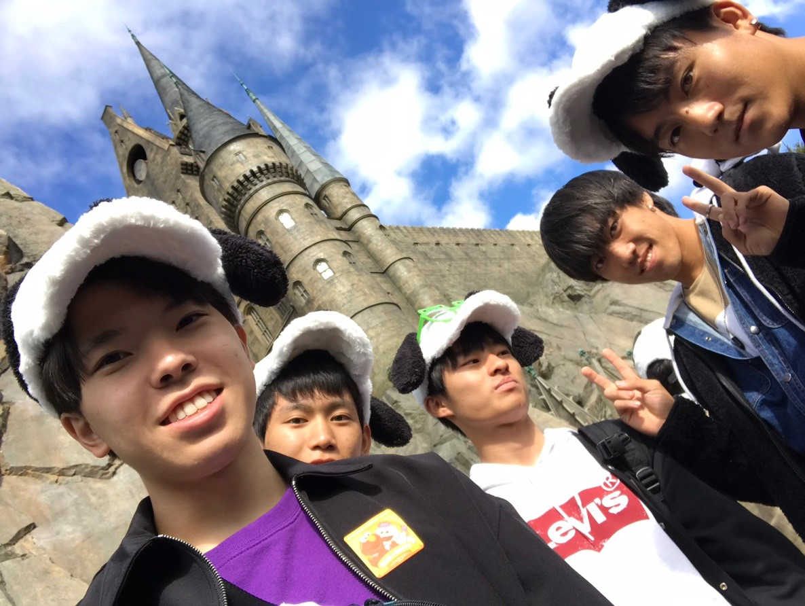
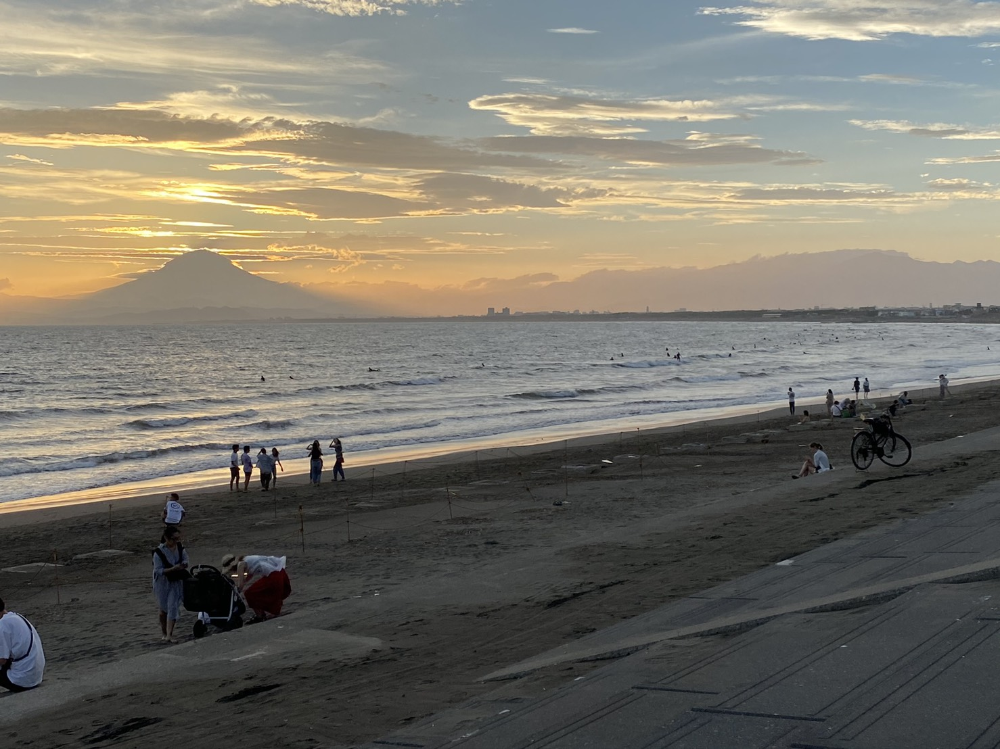

<!DOCTYPE html>
<html lang="ja">
  <meta charset="utf-8">
  <meta name="viewport" content="width=device-width, initial-scale=1">
  <title>TRIP | YUTA★WEB</title>
  <link href="https://fonts.googleapis.com/icon?family=Material+Icons" rel="stylesheet">
  <link rel="preconnect" href="https://fonts.googleapis.com">
  <link rel="preconnect" href="https://fonts.gstatic.com" crossorigin>
  <link href="https://fonts.googleapis.com/css2?family=Teko:wght@700&display=swap" rel="stylesheet">
  <link rel="preconnect" href="https://fonts.googleapis.com">
  <link rel="preconnect" href="https://fonts.gstatic.com" crossorigin>
  <link href="https://fonts.googleapis.com/css2?family=Abril+Fatface&family=Josefin+Sans:ital,wght@1,700&family=Teko:wght@700&display=swap" rel="stylesheet">
  <link rel="stylesheet" href="css/style.css">
  <link rel="icon" href="img/logo.png">
</html>
<body>
  <div class="big-bg-blog">
    <header>
      <div class="header-container">
        <div class="header-left">
          <h3>Yuta★Web</h3>
        </div>
        <div class="header-right pc-menu">
          <nav>
            <ul>
              <li><a href="index.html">HOME</a></li>
              <li><a href="portfolio.html">PORTFOLIO</a></li>
              <li><a href="photo.html">PHOTO</a></li>
              <li><a href="contact.html">CONTACT</a></li>
            </ul>
          </nav>
        </div>
        <div class="sp-menu">
          <span class="material-icons"  id="open">
            menu
          </span>
        </div>
      </div>
    </header>
    <div class="heading-sub">
      <h1>(TOURISM)</h1>
    </div>

    <div id="top">top</div>
 </div>

<div class="overlay">
  <span class="material-icons" id="close">
    close
  </span>
  <nav>
    <ul>
      <li><a href="index.html">HOME</a></li>
      <li><a href="portfolio.html">PORTFOLIO</a></li>
      <li><a href="photo.html">PHOTO</a></li>
      <li><a href="contact.html">CONTACT</a></li>
    </ul>
  </nav>
</div>

<section id="trip">
  <div class="trip-container wrapper">

    <article class="blog-wrapper api" id="stadio">
      <h3 class="title">修学旅行（大阪）</h3>
      <p class="sup">高校2年生の修学旅行で行ったユニバーサルスタジオジャパンでの様子。</p>
      
      <div class="blog-text">
        <p>私の高校は二年生の秋くらいの時期に大阪・兵庫・広島を目的地とした修学旅行がありました。私はどこも楽しかったのですが、中でも三日目に行ったユニバーサルスタジオジャパンでの観光は忘れることのない思い出となりました。私はそれまでユニバに入ったことがありませんでした。ですので入園前はディズニーのようなところだろうなと漠然としたイメージを持っていましたが実際は全く異なったものでした。まず、一番違うなと思ったのが最新のVR技術を搭載したアトラクションが多かったところです。そのためとても迫力のある近未来的なアトラクションばかりで楽しかったです。また、好きな友達とたくさんの思い出を共有できて良かったなと思います。大学のうちにもう一度くらい行こうかなと思います。</p>
      </div>

    </article>
    <article class="blog-wrapper api" id="sea">
      <h3 class="title">大学の友人との江の島・鎌倉観光</h3>
      <p class="date">2020/09/08
        カテゴリ(観光)</p>
      
      <div class="blog-text">
        <p>僕が入学後初めて大学に足を踏み入れたのがこの日です。この日は大学主催の英語資格試験の開催日でした。僕は事前にサークル活動に少し参加していたので、数は少ないながら友達がいました。そのうちのひとりの出身が鎌倉であるとのことだったので、せっかくだから地元を案内してもらおうと思い、頼んでみたら快く了承してくれたので、その日は鎌倉周辺を初めて刊行することになりました。まず、鎌倉に行き、その後江ノ電で江の島に行きました。鎌倉では小町通りの中にあるカレーライス屋さんで大盛りのチーズカレーを食べました。とてつもなく美味しかったです。その後は江の島に行き、テストもあったことからもう時間は夕方になっていました。夕日が海に沈んでいくのがとても綺麗でいいよと言うので行ってみてみることにしました。この写真はその時に撮った写真です。生で見た時は写真では伝わらないほど綺麗で、波の音と合わせてみるととてつもなく幸せな気分になりました。気分が落ち込んだりしたときにはまたここに行きたいなと思えるようなとても素敵なところでした。</p>
      </div>
    </article>

    <article class="blog-wrapper api" id="drive">
      <h3 class="title">放課後のドライブ</h3>
      <p class="date">2020/11/23
        カテゴリ(観光)</p>
      
      <div class="blog-text">
        <p>大学の前期はオンラインで友達も少なく、あまり遊ぶこともない生活でしたが、後期が始まってからは仲良くなれた友達が少しずつ増えていきました。この写真の6人はみんな仲が良く、たくさん集まって遊んだりする仲です。そんな中で、友達の一人がドライブに行ってたくさんの夜景を見て回りたいというので放課後ドライブをすることとなりました。車に揺られている時間が長く、とてもたくさんの話を大好きな友達たちとできてうれしかったです。それ以来ドライブには半年以上いけてないのでまた行きたいなと思います。</p>
      </div>
    </article>

  </div>
</section>


<section id="footer">
  <div class="footer-container wrapper">
    <div class="about">
      <h2 class="fot-title">About</h2>
      <div class="about-text">
        <p>こちらのサイトは駆け出し大学生エンジニアによるはポートフォリオサイトとなっております。下記のブログの詳細についてもご覧いただけると幸いです。</p>
      </div>
      <nav>
        <ul class="list_triangle">
          <li><a href="trip.html">BLOG(観光)</a></li>
          <li><a href="meals.html">BLOG(グルメ)</a></li>
          <li><a href="soccer.html">BLOG(サッカー)</a></li>
        </ul>
      </nav>
    </div>
    <div class="menu">
      <h2 class="fot-title">Menu</h2>
      <nav>
        <ul>
          <li><a href="index.html">HOME</a></li>
          <li><a href="portfolio.html">PORTFOLIO</a></li>
          <li><a href="photo.html">PHOTO</a></li>
          <!-- <li><a href="contact.html">CONTACT</a></li> -->
          <li class="last-border"><a href="contact.html">CONTACT</a></li>
        </ul>
      </nav>
    </div>
    <div class="twitter">
      <h2 class="fot-title">Twitter</h2>

      <a class="twitter-timeline" data-height="340" href="https://twitter.com/aUPS7qtUCYEpfsA?ref_src=twsrc%5Etfw">Tweets by aUPS7qtUCYEpfsA</a> <script async src="https://platform.twitter.com/widgets.js" charset="utf-8"></script>
    </div>
  </div>
  <p class="copy-right">© YUTA SUGIMINE ALL RIGHTS RESERVED</p>
</section>

  <script src="js/script.js"></script>
</body>